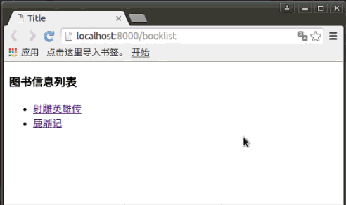
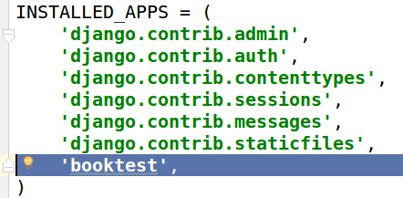

创建项目
- 实际开发工作一般以项目作为一个单位，所以用django开发也是以创建项目开始的。
- 我们的实际项目可以分成一个个的业务模块，这些业务模块，在django框架中对应于一个个应用。

创建项目
项目效果示例：

下面以“图书-英雄”信息系统为例来创建项目，项目名称为test1，项目有一个业务模块，也就是有一个应用，名称为booktest。
在当前用户的某个目录下创建项目，这样不会发生权限问题，此处在/home/Desktop/pytest/目录下创建项目。
workon py3_django 进入基于Python3的虚拟环境
cd /home/python/Desktop
mkdir pytest
cd pytest
django-admin startproject test1 创建django项目，名称为test1
项目默认目录说明
进入test1目录，查看目录树形结构
cd test1
tree
- manage.py是项目运行的入口文件和管理文件
- 项目配置包，与项目同名，所有的项目配置都在这里
- init.py是一个空文件，作用是这个目录test1可以被当作包使用
- settings.py是项目的整体配置文件
- urls.py是项目的URL配置文件
- wsgi.py是web服务器和django框架交互的入口
创建应用
使用一个应用开发一个业务模块，此处创建应用名称为booktest，完成图书英雄的信息维护 创建应用的命令如下：
python manage.py startapp booktest
应用目录说明:
- admin.py 后台页面设置文件
- migrations 数据迁移文件夹
- models.py 写和数据库相关的内容，对应于MVT中的M
- views.py 接收请求，进行处理，和M和T进行交互，返回应答，对应于MVT中的V
- tests.py 用于软件测试用，实际开发中有测试人员来做测试，这个文件不用管
设置项目依赖的python环境
接下来可以使用pycharm打开项目目录，打开项目后需要设置项目依赖的python环境。 在虚拟环境执行如下命令，可以查看当前依赖的python环境位置：
which python
执行结果：
/home/python/.virtualenvs/py3_django/bin/python
将上面的执行结果复制，然后去到pycharm中，设置项目依赖的python环境：
安装应用
应用创建成功后，需要安装才可以使用
在test1/settings.py中INSTALLED_APPS下添加应用的名称就可以完成安装：

开发服务器
在开发阶段，为了能够快速预览到开发的效果，django提供了一个纯python编写的轻量级web服务器，仅在开发阶段使用，运行服务器命令如下：
python manage.py runserver <ip:端口>
可以不写ip,默认端口为8000,服务器成功启动后如下图:

在浏览器中输入网址“127.0.0.1:8000”，或者按着ctrl键点击上图中标示出来的地址，可以查看当前站点开发效果，如果增加、修改、删除文件，服务器会自动重启，按ctrl+c停止服务器。